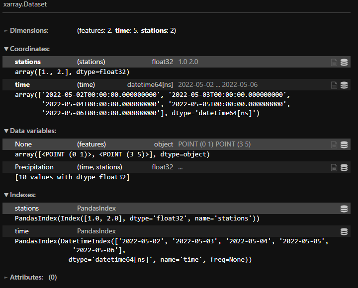

library(sf)Linking to GEOS 3.12.1, GDAL 3.8.4, PROJ 9.4.0; sf_use_s2() is TRUElibrary(stars)Loading required package: abindlibrary(sf)Linking to GEOS 3.12.1, GDAL 3.8.4, PROJ 9.4.0; sf_use_s2() is TRUElibrary(stars)Loading required package: abindmdim documentation in starsset.seed(135)
m = matrix(runif(10), 2, 5)
names(dim(m)) = c("stations", "time")
times = as.Date("2022-05-01") + 1:5
pts = st_as_sfc(c("POINT(0 1)", "POINT(3 5)"))
s = st_as_stars(list(Precipitation = m)) |>
st_set_dimensions(1, values = pts) |>
st_set_dimensions(2, values = times)temp_stars_nc = "mdim-stars.nc"
temp_stars_zr = "mdim-stars.zarr"write_mdim(s, temp_stars_nc)
write_mdim(s, temp_stars_zr)read_mdim(here::here(temp_stars_nc))stars object with 2 dimensions and 1 attribute
attribute(s):
Min. 1st Qu. Median Mean 3rd Qu. Max.
Precipitation 0.03524588 0.3224987 0.3772574 0.4289465 0.511113 0.9204841
dimension(s):
from to offset delta refsys point values
stations 1 2 NA NA NA TRUE POINT (0 1), POINT (3 5)
time 1 5 2022-05-02 1 days Date NA NULLread_mdim(here::here(temp_stars_zr))stars object with 2 dimensions and 1 attribute
attribute(s):
Min. 1st Qu. Median Mean 3rd Qu. Max.
Precipitation 0.03524588 0.3224987 0.3772574 0.4289465 0.511113 0.9204841
dimension(s):
from to offset delta refsys point values
stations 1 2 NA NA NA TRUE POINT (0 1), POINT (3 5)
time 1 5 2022-05-02 1 days Date NA NULLncmeta::nc_meta(here::here(temp_stars_nc))$dimension
# A tibble: 2 × 5
id name length unlim coord_dim
<int> <chr> <dbl> <lgl> <lgl>
1 0 time 5 FALSE TRUE
2 1 stations 2 FALSE TRUE
$variable
# A tibble: 6 × 6
id name type ndims natts dim_coord
<int> <chr> <chr> <int> <int> <lgl>
1 0 Precipitation NC_FLOAT 2 2 FALSE
2 1 stations NC_FLOAT 1 0 TRUE
3 2 time NC_FLOAT 1 1 TRUE
4 3 x NC_FLOAT 1 1 FALSE
5 4 y NC_FLOAT 1 1 FALSE
6 5 geometry NC_FLOAT 0 2 FALSE
$attribute
# A tibble: 8 × 4
id name variable value
<int> <chr> <chr> <named list>
1 0 coordinates Precipitation <chr [1]>
2 1 geometry Precipitation <chr [1]>
3 0 units time <chr [1]>
4 0 axis x <chr [1]>
5 0 axis y <chr [1]>
6 0 geometry_type geometry <chr [1]>
7 1 node_coordinates geometry <chr [1]>
8 0 Conventions NC_GLOBAL <chr [1]>
$extended
# A tibble: 2 × 3
dimension name time
<int> <chr> <list>
1 0 time <CFTime>
2 1 stations <lgl [1]>
$axis
# A tibble: 6 × 3
axis variable dimension
<int> <chr> <int>
1 1 Precipitation 1
2 2 Precipitation 0
3 3 stations 1
4 4 time 0
5 5 x 1
6 6 y 1
$grid
# A tibble: 3 × 4
grid ndims variables nvars
<chr> <int> <list> <int>
1 D1,D0 2 <tibble [1 × 1]> 1
2 D0 1 <tibble [1 × 1]> 1
3 D1 1 <tibble [3 × 1]> 3
$source
# A tibble: 1 × 2
access source
<dttm> <chr>
1 2025-02-10 21:50:26 /home/rstudio/vdc-encodings/mdim-stars.nc
attr(,"class")
[1] "ncmeta"fs::dir_tree(here::here(temp_stars_zr))/home/rstudio/vdc-encodings/mdim-stars.zarr
├── Precipitation
│ └── 0.0
├── geometry
├── stations
│ └── 0
├── time
│ └── 0
├── x
│ └── 0
└── y
└── 0Can be read but it is not decoded correctly. Note that the stations are floats and the geometries are placed in a data variable with the name None.

Code dump of output
xr.open_dataset("mdim-stars.nc", engine="netcdf4").xvec.decode_cf()
xarray.Dataset
Dimensions:
features: 2time: 5stations: 2
Coordinates:
stations
(stations)
float32
1.0 2.0
time
(time)
datetime64[ns]
2022-05-02 ... 2022-05-06
Data variables:
None
(features)
object
POINT (0 1) POINT (3 5)
Precipitation
(time, stations)
float32
...
Indexes:
stations
PandasIndex
time
PandasIndex
Attributes: (0)Code dump of error
xr.open_zarr("mdim-stars.zarr").xvec.decode_cf()
---------------------------------------------------------------------------
KeyError Traceback (most recent call last)
File /opt/conda/lib/python3.11/site-packages/xarray/backends/zarr.py:386, in _get_zarr_dims_and_attrs(zarr_obj, dimension_key, try_nczarr)
384 try:
385 # Xarray-Zarr
--> 386 dimensions = zarr_obj.attrs[dimension_key]
387 except KeyError as e:
File /opt/conda/lib/python3.11/site-packages/zarr/core/attributes.py:21, in Attributes.__getitem__(self, key)
20 def __getitem__(self, key: str) -> JSON:
---> 21 return self._obj.metadata.attributes[key]
KeyError: '_ARRAY_DIMENSIONS'
During handling of the above exception, another exception occurred:
TypeError Traceback (most recent call last)
Cell In[6], line 1
----> 1 xr.open_zarr("../../data/raw/vdc-examples/mdim-stars.zarr").xvec.decode_cf()
File /opt/conda/lib/python3.11/site-packages/xarray/backends/zarr.py:1490, in open_zarr(store, group, synchronizer, chunks, decode_cf, mask_and_scale, decode_times, concat_characters, decode_coords, drop_variables, consolidated, overwrite_encoded_chunks, chunk_store, storage_options, decode_timedelta, use_cftime, zarr_version, zarr_format, use_zarr_fill_value_as_mask, chunked_array_type, from_array_kwargs, **kwargs)
1476 raise TypeError(
1477 "open_zarr() got unexpected keyword arguments " + ",".join(kwargs.keys())
1478 )
1480 backend_kwargs = {
1481 "synchronizer": synchronizer,
1482 "consolidated": consolidated,
(...)
1487 "zarr_format": zarr_format,
1488 }
-> 1490 ds = open_dataset(
1491 filename_or_obj=store,
1492 group=group,
1493 decode_cf=decode_cf,
1494 mask_and_scale=mask_and_scale,
1495 decode_times=decode_times,
1496 concat_characters=concat_characters,
1497 decode_coords=decode_coords,
1498 engine="zarr",
1499 chunks=chunks,
1500 drop_variables=drop_variables,
1501 chunked_array_type=chunked_array_type,
1502 from_array_kwargs=from_array_kwargs,
1503 backend_kwargs=backend_kwargs,
1504 decode_timedelta=decode_timedelta,
1505 use_cftime=use_cftime,
1506 zarr_version=zarr_version,
1507 use_zarr_fill_value_as_mask=use_zarr_fill_value_as_mask,
1508 )
1509 return ds
File /opt/conda/lib/python3.11/site-packages/xarray/backends/api.py:686, in open_dataset(filename_or_obj, engine, chunks, cache, decode_cf, mask_and_scale, decode_times, decode_timedelta, use_cftime, concat_characters, decode_coords, drop_variables, inline_array, chunked_array_type, from_array_kwargs, backend_kwargs, **kwargs)
674 decoders = _resolve_decoders_kwargs(
675 decode_cf,
676 open_backend_dataset_parameters=backend.open_dataset_parameters,
(...)
682 decode_coords=decode_coords,
683 )
685 overwrite_encoded_chunks = kwargs.pop("overwrite_encoded_chunks", None)
--> 686 backend_ds = backend.open_dataset(
687 filename_or_obj,
688 drop_variables=drop_variables,
689 **decoders,
690 **kwargs,
691 )
692 ds = _dataset_from_backend_dataset(
693 backend_ds,
694 filename_or_obj,
(...)
704 **kwargs,
705 )
706 return ds
File /opt/conda/lib/python3.11/site-packages/xarray/backends/zarr.py:1580, in ZarrBackendEntrypoint.open_dataset(self, filename_or_obj, mask_and_scale, decode_times, concat_characters, decode_coords, drop_variables, use_cftime, decode_timedelta, group, mode, synchronizer, consolidated, chunk_store, storage_options, zarr_version, zarr_format, store, engine, use_zarr_fill_value_as_mask, cache_members)
1578 store_entrypoint = StoreBackendEntrypoint()
1579 with close_on_error(store):
-> 1580 ds = store_entrypoint.open_dataset(
1581 store,
1582 mask_and_scale=mask_and_scale,
1583 decode_times=decode_times,
1584 concat_characters=concat_characters,
1585 decode_coords=decode_coords,
1586 drop_variables=drop_variables,
1587 use_cftime=use_cftime,
1588 decode_timedelta=decode_timedelta,
1589 )
1590 return ds
File /opt/conda/lib/python3.11/site-packages/xarray/backends/store.py:44, in StoreBackendEntrypoint.open_dataset(self, filename_or_obj, mask_and_scale, decode_times, concat_characters, decode_coords, drop_variables, use_cftime, decode_timedelta)
30 def open_dataset(
31 self,
32 filename_or_obj: str | os.PathLike[Any] | ReadBuffer | AbstractDataStore,
(...)
40 decode_timedelta=None,
41 ) -> Dataset:
42 assert isinstance(filename_or_obj, AbstractDataStore)
---> 44 vars, attrs = filename_or_obj.load()
45 encoding = filename_or_obj.get_encoding()
47 vars, attrs, coord_names = conventions.decode_cf_variables(
48 vars,
49 attrs,
(...)
56 decode_timedelta=decode_timedelta,
57 )
File /opt/conda/lib/python3.11/site-packages/xarray/backends/common.py:312, in AbstractDataStore.load(self)
293 def load(self):
294 """
295 This loads the variables and attributes simultaneously.
296 A centralized loading function makes it easier to create
(...)
309 are requested, so care should be taken to make sure its fast.
310 """
311 variables = FrozenDict(
--> 312 (_decode_variable_name(k), v) for k, v in self.get_variables().items()
313 )
314 attributes = FrozenDict(self.get_attrs())
315 return variables, attributes
File /opt/conda/lib/python3.11/site-packages/xarray/backends/zarr.py:856, in ZarrStore.get_variables(self)
855 def get_variables(self):
--> 856 return FrozenDict((k, self.open_store_variable(k)) for k in self.array_keys())
File /opt/conda/lib/python3.11/site-packages/xarray/core/utils.py:457, in FrozenDict(*args, **kwargs)
456 def FrozenDict(*args, **kwargs) -> Frozen:
--> 457 return Frozen(dict(*args, **kwargs))
File /opt/conda/lib/python3.11/site-packages/xarray/backends/zarr.py:856, in <genexpr>(.0)
855 def get_variables(self):
--> 856 return FrozenDict((k, self.open_store_variable(k)) for k in self.array_keys())
File /opt/conda/lib/python3.11/site-packages/xarray/backends/zarr.py:814, in ZarrStore.open_store_variable(self, name)
812 data = indexing.LazilyIndexedArray(ZarrArrayWrapper(zarr_array))
813 try_nczarr = self._mode == "r"
--> 814 dimensions, attributes = _get_zarr_dims_and_attrs(
815 zarr_array, DIMENSION_KEY, try_nczarr
816 )
817 attributes = dict(attributes)
819 encoding = {
820 "chunks": zarr_array.chunks,
821 "preferred_chunks": dict(zip(dimensions, zarr_array.chunks, strict=True)),
822 }
File /opt/conda/lib/python3.11/site-packages/xarray/backends/zarr.py:396, in _get_zarr_dims_and_attrs(zarr_obj, dimension_key, try_nczarr)
394 # NCZarr defines dimensions through metadata in .zarray
395 zarray_path = os.path.join(zarr_obj.path, ".zarray")
--> 396 zarray = json.loads(zarr_obj.store[zarray_path])
397 try:
398 # NCZarr uses Fully Qualified Names
399 dimensions = [
400 os.path.basename(dim) for dim in zarray["_NCZARR_ARRAY"]["dimrefs"]
401 ]
TypeError: 'LocalStore' object is not subscriptablexvec.encode_cf()CF conventions and netCDF, Zarr section in xvec development documentation
Function: here
fn_xvec_nc = "geo-encoded-xvec.nc"
fn_xvec_zr = "geo-encoded-xvec.zarr"(nc = read_mdim(here::here(fn_xvec_nc)))stars object with 2 dimensions and 4 attributes
attribute(s):
Min. 1st Qu. Median Mean 3rd Qu.
population 91.0 9914.000000 20018.000000 69112.566856 46402.250000
unemployment 0.0 3.700000 5.280013 5.775029 7.200000
divorce 0.0 1.964874 3.419198 4.019652 5.765314
age 17.2 27.900000 31.000000 31.127771 34.100000
Max.
population 8.863164e+06
unemployment 3.053408e+01
divorce 1.883741e+01
age 5.760000e+01
dimension(s):
from to offset delta refsys point
year 1 4 1960 10 NA NA
county 1 3085 NA NA WGS 84 FALSE
values
year NULL
county MULTIPOLYGON (((-95.34258...,...,MULTIPOLYGON (((-111.3715...## Reading the zarr file crashes R!
# (zr = read_mdim(fn_zr))fn_stars_nc = "geo-encoded-stars.nc"
fn_stars_zr = "geo-encoded-stars.zarr"write_mdim(nc, here::here(fn_stars_nc))
write_mdim(nc, here::here(fn_stars_zr))ncmeta::nc_meta(here::here(fn_xvec_nc))$dimension
# A tibble: 4 × 5
id name length unlim coord_dim
<int> <chr> <dbl> <lgl> <lgl>
1 0 county 3085 FALSE FALSE
2 1 part 3172 FALSE FALSE
3 2 node 80563 FALSE FALSE
4 3 year 4 FALSE TRUE
$variable
# A tibble: 14 × 6
id name type ndims natts dim_coord
<int> <chr> <chr> <int> <int> <lgl>
1 0 x NC_DOUBLE 1 6 FALSE
2 1 y NC_DOUBLE 1 6 FALSE
3 2 part_node_count NC_INT 1 1 FALSE
4 3 interior_ring NC_BYTE 1 2 FALSE
5 4 population NC_INT 2 3 FALSE
6 5 unemployment NC_DOUBLE 2 4 FALSE
7 6 divorce NC_DOUBLE 2 4 FALSE
8 7 age NC_DOUBLE 2 4 FALSE
9 8 node_count NC_INT 1 1 FALSE
10 9 lon NC_DOUBLE 1 6 FALSE
11 10 lat NC_DOUBLE 1 6 FALSE
12 11 year NC_INT 1 0 TRUE
13 12 geometry_container NC_DOUBLE 0 9 FALSE
14 13 spatial_ref NC_INT 0 11 FALSE
$attribute
# A tibble: 63 × 4
id name variable value
<int> <chr> <chr> <named list>
1 0 axis x <chr [1]>
2 1 units x <chr [1]>
3 2 standard_name x <chr [1]>
4 3 grid_mapping x <chr [1]>
5 4 coordinates x <chr [1]>
6 5 _FillValue x <dbl [1]>
7 0 axis y <chr [1]>
8 1 units y <chr [1]>
9 2 standard_name y <chr [1]>
10 3 grid_mapping y <chr [1]>
# ℹ 53 more rows
$extended
# A tibble: 4 × 3
dimension name time
<int> <chr> <list>
1 0 county <lgl [1]>
2 1 part <lgl [1]>
3 2 node <lgl [1]>
4 3 year <lgl [1]>
$axis
# A tibble: 16 × 3
axis variable dimension
<int> <chr> <int>
1 1 x 2
2 2 y 2
3 3 part_node_count 1
4 4 interior_ring 1
5 5 population 3
6 6 population 0
7 7 unemployment 3
8 8 unemployment 0
9 9 divorce 3
10 10 divorce 0
11 11 age 3
12 12 age 0
13 13 node_count 0
14 14 lon 0
15 15 lat 0
16 16 year 3
$grid
# A tibble: 5 × 4
grid ndims variables nvars
<chr> <int> <list> <int>
1 D3,D0 2 <tibble [4 × 1]> 4
2 D0 1 <tibble [3 × 1]> 3
3 D1 1 <tibble [2 × 1]> 2
4 D2 1 <tibble [2 × 1]> 2
5 D3 1 <tibble [1 × 1]> 1
$source
# A tibble: 1 × 2
access source
<dttm> <chr>
1 2025-02-10 21:50:27 /home/rstudio/vdc-encodings/geo-encoded-xvec.nc
attr(,"class")
[1] "ncmeta"ncmeta::nc_meta(here::here(fn_stars_nc))$dimension
# A tibble: 4 × 5
id name length unlim coord_dim
<int> <chr> <dbl> <lgl> <lgl>
1 0 part 3172 FALSE FALSE
2 1 node 80563 FALSE TRUE
3 2 county 3085 FALSE TRUE
4 3 year 4 FALSE TRUE
$variable
# A tibble: 14 × 6
id name type ndims natts dim_coord
<int> <chr> <chr> <int> <int> <lgl>
1 0 population NC_FLOAT 2 3 FALSE
2 1 crs NC_CHAR 0 7 FALSE
3 2 unemployment NC_FLOAT 2 3 FALSE
4 3 divorce NC_FLOAT 2 3 FALSE
5 4 age NC_FLOAT 2 3 FALSE
6 5 year NC_FLOAT 1 0 TRUE
7 6 county NC_FLOAT 1 0 TRUE
8 7 node NC_FLOAT 1 0 TRUE
9 8 x NC_FLOAT 1 1 FALSE
10 9 y NC_FLOAT 1 1 FALSE
11 10 node_count NC_FLOAT 1 0 FALSE
12 11 part_node_count NC_FLOAT 1 0 FALSE
13 12 interior_ring NC_FLOAT 1 0 FALSE
14 13 geometry NC_FLOAT 0 6 FALSE
$attribute
# A tibble: 28 × 4
id name variable value
<int> <chr> <chr> <named list>
1 0 grid_mapping population <chr [1]>
2 1 coordinates population <chr [1]>
3 2 geometry population <chr [1]>
4 0 grid_mapping_name crs <chr [1]>
5 1 long_name crs <chr [1]>
6 2 longitude_of_prime_meridian crs <dbl [1]>
7 3 semi_major_axis crs <dbl [1]>
8 4 inverse_flattening crs <dbl [1]>
9 5 spatial_ref crs <chr [1]>
10 6 crs_wkt crs <chr [1]>
# ℹ 18 more rows
$extended
# A tibble: 4 × 3
dimension name time
<int> <chr> <list>
1 0 part <lgl [1]>
2 1 node <lgl [1]>
3 2 county <lgl [1]>
4 3 year <lgl [1]>
$axis
# A tibble: 16 × 3
axis variable dimension
<int> <chr> <int>
1 1 population 3
2 2 population 2
3 3 unemployment 3
4 4 unemployment 2
5 5 divorce 3
6 6 divorce 2
7 7 age 3
8 8 age 2
9 9 year 3
10 10 county 2
11 11 node 1
12 12 x 1
13 13 y 1
14 14 node_count 2
15 15 part_node_count 0
16 16 interior_ring 0
$grid
# A tibble: 5 × 4
grid ndims variables nvars
<chr> <int> <list> <int>
1 D3,D2 2 <tibble [4 × 1]> 4
2 D0 1 <tibble [2 × 1]> 2
3 D1 1 <tibble [3 × 1]> 3
4 D2 1 <tibble [2 × 1]> 2
5 D3 1 <tibble [1 × 1]> 1
$source
# A tibble: 1 × 2
access source
<dttm> <chr>
1 2025-02-10 21:50:27 /home/rstudio/vdc-encodings/geo-encoded-stars.nc
attr(,"class")
[1] "ncmeta"fs::dir_tree(here::here(fn_xvec_zr))/home/rstudio/vdc-encodings/geo-encoded-xvec.zarr
├── age
│ ├── c
│ │ └── 0
│ │ └── 0
│ └── zarr.json
├── divorce
│ ├── c
│ │ └── 0
│ │ └── 0
│ └── zarr.json
├── geometry_container
│ ├── c
│ └── zarr.json
├── interior_ring
│ ├── c
│ │ └── 0
│ └── zarr.json
├── lat
│ ├── c
│ │ └── 0
│ └── zarr.json
├── lon
│ ├── c
│ │ └── 0
│ └── zarr.json
├── node_count
│ ├── c
│ │ └── 0
│ └── zarr.json
├── part_node_count
│ ├── c
│ │ └── 0
│ └── zarr.json
├── population
│ ├── c
│ │ └── 0
│ │ └── 0
│ └── zarr.json
├── spatial_ref
│ └── zarr.json
├── unemployment
│ ├── c
│ │ └── 0
│ │ └── 0
│ └── zarr.json
├── x
│ ├── c
│ │ ├── 0
│ │ └── 1
│ └── zarr.json
├── y
│ ├── c
│ │ ├── 0
│ │ └── 1
│ └── zarr.json
├── year
│ ├── c
│ │ └── 0
│ └── zarr.json
└── zarr.jsonfs::dir_tree(here::here(fn_stars_zr))/home/rstudio/vdc-encodings/geo-encoded-stars.zarr
├── age
│ ├── 0.0
│ ├── 1.0
│ ├── 10.0
│ ├── 11.0
│ ├── 12.0
│ ├── 2.0
│ ├── 3.0
│ ├── 4.0
│ ├── 5.0
│ ├── 6.0
│ ├── 7.0
│ ├── 8.0
│ └── 9.0
├── county
│ └── 0
├── divorce
│ ├── 0.0
│ ├── 1.0
│ ├── 10.0
│ ├── 11.0
│ ├── 12.0
│ ├── 2.0
│ ├── 3.0
│ ├── 4.0
│ ├── 5.0
│ ├── 6.0
│ ├── 7.0
│ ├── 8.0
│ └── 9.0
├── geometry
├── interior_ring
│ └── 0
├── node
│ └── 0
├── node_count
│ └── 0
├── part_node_count
│ └── 0
├── population
│ ├── 0.0
│ ├── 1.0
│ ├── 10.0
│ ├── 11.0
│ ├── 12.0
│ ├── 2.0
│ ├── 3.0
│ ├── 4.0
│ ├── 5.0
│ ├── 6.0
│ ├── 7.0
│ ├── 8.0
│ └── 9.0
├── unemployment
│ ├── 0.0
│ ├── 1.0
│ ├── 10.0
│ ├── 11.0
│ ├── 12.0
│ ├── 2.0
│ ├── 3.0
│ ├── 4.0
│ ├── 5.0
│ ├── 6.0
│ ├── 7.0
│ ├── 8.0
│ └── 9.0
├── x
│ └── 0
├── y
│ └── 0
└── year
└── 0read_mdim(here::here(fn_stars_nc))stars object with 2 dimensions and 4 attributes
attribute(s):
Min. 1st Qu. Median Mean 3rd Qu.
population 91.0 9914.000000 20018.000000 69112.566856 46402.250000
unemployment 0.0 3.700000 5.280013 5.775029 7.200000
divorce 0.0 1.964874 3.419198 4.019652 5.765315
age 17.2 27.900000 31.000000 31.127771 34.099998
Max.
population 8.863164e+06
unemployment 3.053408e+01
divorce 1.883741e+01
age 5.760000e+01
dimension(s):
from to offset delta refsys point
year 1 4 1960 10 NA NA
county 1 3085 NA NA WGS 84 FALSE
values
year NULL
county MULTIPOLYGON (((-95.34258...,...,MULTIPOLYGON (((-111.3715...read_mdim(here::here(fn_stars_zr))stars object with 2 dimensions and 4 attributes
attribute(s):
Min. 1st Qu. Median Mean 3rd Qu.
age 17.2 27.900000 31.000000 31.127771 34.099998
divorce 0.0 1.964874 3.419198 4.019652 5.765315
population 91.0 9914.000000 20018.000000 69112.566856 46402.250000
unemployment 0.0 3.700000 5.280013 5.775029 7.200000
Max.
age 5.760000e+01
divorce 1.883741e+01
population 8.863164e+06
unemployment 3.053408e+01
dimension(s):
from to offset delta refsys point
year 1 4 1960 10 NA NA
county 1 3085 NA NA WGS 84 FALSE
values
year NULL
county MULTIPOLYGON (((-95.34258...,...,MULTIPOLYGON (((-111.3715...Code dump of test on Jupyter notebook
xr.open_dataset("geo-encoded-stars.nc", engine="netcdf4").xvec.decode_cf()
---------------------------------------------------------------------------
TypeError Traceback (most recent call last)
File /opt/conda/lib/python3.11/site-packages/numpy/core/fromnumeric.py:59, in _wrapfunc(obj, method, *args, **kwds)
58 try:
---> 59 return bound(*args, **kwds)
60 except TypeError:
61 # A TypeError occurs if the object does have such a method in its
62 # class, but its signature is not identical to that of NumPy's. This
(...)
66 # Call _wrapit from within the except clause to ensure a potential
67 # exception has a traceback chain.
TypeError: Cannot cast array data from dtype('float32') to dtype('int64') according to the rule 'safe'
During handling of the above exception, another exception occurred:
TypeError Traceback (most recent call last)
Cell In[2], line 1
----> 1 xr.open_dataset("../../data/raw/vdc-examples/geo-encoded-stars.nc", engine="netcdf4").xvec.decode_cf()
File /opt/conda/lib/python3.11/site-packages/xvec/accessor.py:1441, in XvecAccessor.decode_cf(self)
1436 if not isinstance(self._obj, xr.Dataset):
1437 raise ValueError(
1438 "CF decoding is only supported on Datasets. Convert to a Dataset using `.to_dataset()` first."
1439 )
-> 1441 decoded = cfxr.geometry.decode_geometries(self._obj.copy())
1442 crs = {
1443 name: CRS.from_user_input(var.attrs["crs_wkt"])
1444 for name, var in decoded._variables.items()
1445 if "crs_wkt" in var.attrs or "grid_mapping_name" in var.attrs
1446 }
1447 dims = decoded.xvec.geom_coords.dims
File /opt/conda/lib/python3.11/site-packages/cf_xarray/geometry.py:214, in decode_geometries(encoded)
211 # Grab the coordinates attribute
212 geom_attrs.update(enc_geom_var.encoding)
--> 214 geom_var = cf_to_shapely(encoded, container=container_name).variable
216 todrop.extend(
217 (container_name,)
218 + tuple(
(...)
231 )
232 )
234 name = geom_attrs.get("variable_name", None)
File /opt/conda/lib/python3.11/site-packages/cf_xarray/geometry.py:539, in cf_to_shapely(ds, container)
537 geometries = cf_to_lines(subds)
538 elif geom_type == "polygon":
--> 539 geometries = cf_to_polygons(subds)
540 else:
541 raise ValueError(
542 f"Valid CF geometry types are 'point', 'line' and 'polygon'. Got {geom_type}"
543 )
File /opt/conda/lib/python3.11/site-packages/cf_xarray/geometry.py:944, in cf_to_polygons(ds)
941 raise ValueError("coordinate array must start with an exterior ring")
942 offset2 = np.append(np.where(interior_ring == 0)[0], [len(part_node_count)])
--> 944 polygons = from_ragged_array(GeometryType.POLYGON, xy, offsets=(offset1, offset2))
946 # get index of offset2 values that are edges for node_count
947 offset3 = np.nonzero(
948 np.isin(
949 offset2,
950 np.nonzero(np.isin(offset1, np.insert(np.cumsum(node_count), 0, 0)))[0],
951 )
952 )[0]
File /opt/conda/lib/python3.11/site-packages/shapely/_ragged_array.py:445, in from_ragged_array(geometry_type, coords, offsets)
443 return _linestring_from_flatcoords(coords, *offsets)
444 if geometry_type == GeometryType.POLYGON:
--> 445 return _polygon_from_flatcoords(coords, *offsets)
446 elif geometry_type == GeometryType.MULTIPOINT:
447 return _multipoint_from_flatcoords(coords, *offsets)
File /opt/conda/lib/python3.11/site-packages/shapely/_ragged_array.py:369, in _polygon_from_flatcoords(coords, offsets1, offsets2)
366 def _polygon_from_flatcoords(coords, offsets1, offsets2):
367 # recreate rings
368 ring_lengths = np.diff(offsets1)
--> 369 ring_indices = np.repeat(np.arange(len(ring_lengths)), ring_lengths)
370 rings = creation.linearrings(coords, indices=ring_indices)
372 # recreate polygons
File /opt/conda/lib/python3.11/site-packages/numpy/core/fromnumeric.py:466, in repeat(a, repeats, axis)
423 @array_function_dispatch(_repeat_dispatcher)
424 def repeat(a, repeats, axis=None):
425 """
426 Repeat each element of an array after themselves
427
(...)
464
465 """
--> 466 return _wrapfunc(a, 'repeat', repeats, axis=axis)
File /opt/conda/lib/python3.11/site-packages/numpy/core/fromnumeric.py:68, in _wrapfunc(obj, method, *args, **kwds)
59 return bound(*args, **kwds)
60 except TypeError:
61 # A TypeError occurs if the object does have such a method in its
62 # class, but its signature is not identical to that of NumPy's. This
(...)
66 # Call _wrapit from within the except clause to ensure a potential
67 # exception has a traceback chain.
---> 68 return _wrapit(obj, method, *args, **kwds)
File /opt/conda/lib/python3.11/site-packages/numpy/core/fromnumeric.py:45, in _wrapit(obj, method, *args, **kwds)
43 except AttributeError:
44 wrap = None
---> 45 result = getattr(asarray(obj), method)(*args, **kwds)
46 if wrap:
47 if not isinstance(result, mu.ndarray):
TypeError: Cannot cast array data from dtype('float32') to dtype('int64') according to the rule 'safe'xr.open_zarr("geo-encoded-stars.zarr").xvec.decode_cf()
---------------------------------------------------------------------------
KeyError Traceback (most recent call last)
File /opt/conda/lib/python3.11/site-packages/xarray/backends/zarr.py:386, in _get_zarr_dims_and_attrs(zarr_obj, dimension_key, try_nczarr)
384 try:
385 # Xarray-Zarr
--> 386 dimensions = zarr_obj.attrs[dimension_key]
387 except KeyError as e:
File /opt/conda/lib/python3.11/site-packages/zarr/core/attributes.py:21, in Attributes.__getitem__(self, key)
20 def __getitem__(self, key: str) -> JSON:
---> 21 return self._obj.metadata.attributes[key]
KeyError: '_ARRAY_DIMENSIONS'
During handling of the above exception, another exception occurred:
TypeError Traceback (most recent call last)
Cell In[4], line 1
----> 1 xr.open_zarr("../../data/raw/vdc-examples/geo-encoded-stars.zarr").xvec.decode_cf()
File /opt/conda/lib/python3.11/site-packages/xarray/backends/zarr.py:1490, in open_zarr(store, group, synchronizer, chunks, decode_cf, mask_and_scale, decode_times, concat_characters, decode_coords, drop_variables, consolidated, overwrite_encoded_chunks, chunk_store, storage_options, decode_timedelta, use_cftime, zarr_version, zarr_format, use_zarr_fill_value_as_mask, chunked_array_type, from_array_kwargs, **kwargs)
1476 raise TypeError(
1477 "open_zarr() got unexpected keyword arguments " + ",".join(kwargs.keys())
1478 )
1480 backend_kwargs = {
1481 "synchronizer": synchronizer,
1482 "consolidated": consolidated,
(...)
1487 "zarr_format": zarr_format,
1488 }
-> 1490 ds = open_dataset(
1491 filename_or_obj=store,
1492 group=group,
1493 decode_cf=decode_cf,
1494 mask_and_scale=mask_and_scale,
1495 decode_times=decode_times,
1496 concat_characters=concat_characters,
1497 decode_coords=decode_coords,
1498 engine="zarr",
1499 chunks=chunks,
1500 drop_variables=drop_variables,
1501 chunked_array_type=chunked_array_type,
1502 from_array_kwargs=from_array_kwargs,
1503 backend_kwargs=backend_kwargs,
1504 decode_timedelta=decode_timedelta,
1505 use_cftime=use_cftime,
1506 zarr_version=zarr_version,
1507 use_zarr_fill_value_as_mask=use_zarr_fill_value_as_mask,
1508 )
1509 return ds
File /opt/conda/lib/python3.11/site-packages/xarray/backends/api.py:686, in open_dataset(filename_or_obj, engine, chunks, cache, decode_cf, mask_and_scale, decode_times, decode_timedelta, use_cftime, concat_characters, decode_coords, drop_variables, inline_array, chunked_array_type, from_array_kwargs, backend_kwargs, **kwargs)
674 decoders = _resolve_decoders_kwargs(
675 decode_cf,
676 open_backend_dataset_parameters=backend.open_dataset_parameters,
(...)
682 decode_coords=decode_coords,
683 )
685 overwrite_encoded_chunks = kwargs.pop("overwrite_encoded_chunks", None)
--> 686 backend_ds = backend.open_dataset(
687 filename_or_obj,
688 drop_variables=drop_variables,
689 **decoders,
690 **kwargs,
691 )
692 ds = _dataset_from_backend_dataset(
693 backend_ds,
694 filename_or_obj,
(...)
704 **kwargs,
705 )
706 return ds
File /opt/conda/lib/python3.11/site-packages/xarray/backends/zarr.py:1580, in ZarrBackendEntrypoint.open_dataset(self, filename_or_obj, mask_and_scale, decode_times, concat_characters, decode_coords, drop_variables, use_cftime, decode_timedelta, group, mode, synchronizer, consolidated, chunk_store, storage_options, zarr_version, zarr_format, store, engine, use_zarr_fill_value_as_mask, cache_members)
1578 store_entrypoint = StoreBackendEntrypoint()
1579 with close_on_error(store):
-> 1580 ds = store_entrypoint.open_dataset(
1581 store,
1582 mask_and_scale=mask_and_scale,
1583 decode_times=decode_times,
1584 concat_characters=concat_characters,
1585 decode_coords=decode_coords,
1586 drop_variables=drop_variables,
1587 use_cftime=use_cftime,
1588 decode_timedelta=decode_timedelta,
1589 )
1590 return ds
File /opt/conda/lib/python3.11/site-packages/xarray/backends/store.py:44, in StoreBackendEntrypoint.open_dataset(self, filename_or_obj, mask_and_scale, decode_times, concat_characters, decode_coords, drop_variables, use_cftime, decode_timedelta)
30 def open_dataset(
31 self,
32 filename_or_obj: str | os.PathLike[Any] | ReadBuffer | AbstractDataStore,
(...)
40 decode_timedelta=None,
41 ) -> Dataset:
42 assert isinstance(filename_or_obj, AbstractDataStore)
---> 44 vars, attrs = filename_or_obj.load()
45 encoding = filename_or_obj.get_encoding()
47 vars, attrs, coord_names = conventions.decode_cf_variables(
48 vars,
49 attrs,
(...)
56 decode_timedelta=decode_timedelta,
57 )
File /opt/conda/lib/python3.11/site-packages/xarray/backends/common.py:312, in AbstractDataStore.load(self)
293 def load(self):
294 """
295 This loads the variables and attributes simultaneously.
296 A centralized loading function makes it easier to create
(...)
309 are requested, so care should be taken to make sure its fast.
310 """
311 variables = FrozenDict(
--> 312 (_decode_variable_name(k), v) for k, v in self.get_variables().items()
313 )
314 attributes = FrozenDict(self.get_attrs())
315 return variables, attributes
File /opt/conda/lib/python3.11/site-packages/xarray/backends/zarr.py:856, in ZarrStore.get_variables(self)
855 def get_variables(self):
--> 856 return FrozenDict((k, self.open_store_variable(k)) for k in self.array_keys())
File /opt/conda/lib/python3.11/site-packages/xarray/core/utils.py:457, in FrozenDict(*args, **kwargs)
456 def FrozenDict(*args, **kwargs) -> Frozen:
--> 457 return Frozen(dict(*args, **kwargs))
File /opt/conda/lib/python3.11/site-packages/xarray/backends/zarr.py:856, in <genexpr>(.0)
855 def get_variables(self):
--> 856 return FrozenDict((k, self.open_store_variable(k)) for k in self.array_keys())
File /opt/conda/lib/python3.11/site-packages/xarray/backends/zarr.py:814, in ZarrStore.open_store_variable(self, name)
812 data = indexing.LazilyIndexedArray(ZarrArrayWrapper(zarr_array))
813 try_nczarr = self._mode == "r"
--> 814 dimensions, attributes = _get_zarr_dims_and_attrs(
815 zarr_array, DIMENSION_KEY, try_nczarr
816 )
817 attributes = dict(attributes)
819 encoding = {
820 "chunks": zarr_array.chunks,
821 "preferred_chunks": dict(zip(dimensions, zarr_array.chunks, strict=True)),
822 }
File /opt/conda/lib/python3.11/site-packages/xarray/backends/zarr.py:396, in _get_zarr_dims_and_attrs(zarr_obj, dimension_key, try_nczarr)
394 # NCZarr defines dimensions through metadata in .zarray
395 zarray_path = os.path.join(zarr_obj.path, ".zarray")
--> 396 zarray = json.loads(zarr_obj.store[zarray_path])
397 try:
398 # NCZarr uses Fully Qualified Names
399 dimensions = [
400 os.path.basename(dim) for dim in zarray["_NCZARR_ARRAY"]["dimrefs"]
401 ]
TypeError: 'LocalStore' object is not subscriptable